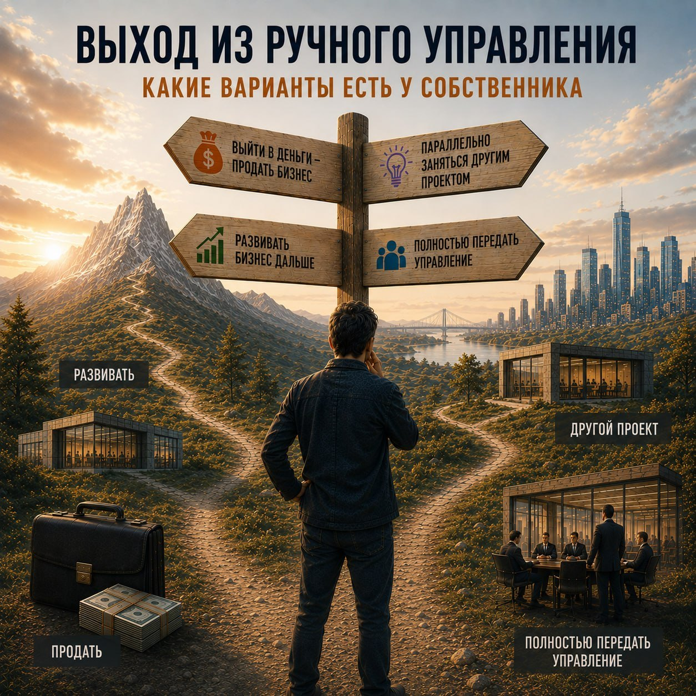

Выход из ручного управления: какие варианты есть у собственника
Бизнес вырос. Начались болезни роста. В какой-то момент становится понятно: компания больше не помещается в ручное управление.
Что делать дальше?

Готового рецепта нет. Компании разные, собственники разные, да и причины, по которым ручное управление перестаёт работать, тоже отличаются. Но почти каждый собственник, который проходит этот этап, сталкивается с одной и той же последовательностью решений.
Сначала нужно определить, куда вы вообще хотите прийти. Потом решить, насколько глубоко вы готовы разбираться в управлении самостоятельно. И только после этого выбирать, кто будет строить систему управления.
Именно эти развилки и разберём.
Сначала — зачем
Прежде чем думать о показателях, оргструктуре, регламентах и регулярных совещаниях, стоит остановиться и задать себе довольно простой вопрос:
А чего я хочу от этого бизнеса дальше?
Можно продолжать развивать компанию и самому оставаться её активным руководителем. Можно построить систему, которая позволит собственнику заниматься уже не операционкой, а стратегией. Можно параллельно запускать другой бизнес. Можно готовить компанию к продаже. А иногда собственник понимает, что больше не хочет заниматься этим бизнесом вообще.
Это кажется очевидным, но именно этот вопрос часто пропускают. Компания растёт, ручное управление перестаёт справляться, и собственник автоматически решает: «Нужно строить систему».
Но систему можно строить ради совершенно разных целей. Одному нужна компания, способная вырасти ещё в пять раз. Другому — бизнес, который позволит самому выйти из операционки. Третьему — подготовленный к продаже актив.
И решения во всех трёх случаях будут разными.
Причём ответ часто появляется не тогда, когда собственник спокойно садится и планирует следующие пять лет. Обычно к нему подталкивает сама ситуация: накопилась усталость, ушёл ключевой руководитель, собственник снова оказался единственным человеком, который может решить проблему.
Это нормальный сценарий. Вопрос только в том, что делать после того, как проблема стала очевидной.
Разобраться самому или найти того, кто уже умеет
Следующая развилка — уже про самого собственника.
Нужно ли ему самому понимать, как устроено системное управление компанией? Или достаточно найти человека, который это понимает, и поставить ему задачу?
Если собственник раньше работал в крупной компании с развитой системой управления, часть ответа у него уже есть. Он видел, как устроены финансовое планирование, ответственность руководителей, регулярный менеджмент, процессы принятия решений. Для него построение системы будет скорее переносом и адаптацией знакомых принципов.
Если такого опыта не было, выбор становится более существенным.
Разобраться самому
Книги, программы для руководителей, MBA, сообщества собственников, разборы чужих компаний — способов сегодня достаточно.
Здесь важно не просто собрать набор инструментов. Можно за месяц узнать о десятках моделей управления и всё равно не понимать, как они связаны между собой.
Гораздо полезнее разобраться в самой логике управления: зачем компании структура, как распределяется ответственность, как связаны стратегия и операционная деятельность, как принимаются решения и как собственник понимает, что компания движется в нужную сторону.
Да, это требует времени. Но если вы собираетесь развивать бизнес ещё много лет, эти знания становятся уже не обучением, а частью компетенции собственника.
Найти того, кто уже умеет
Этот путь быстрее. Но у него есть очевидный риск.
Если собственник совсем не разбирается в управлении, ему сложно оценить, что именно ему строят. Он не всегда понимает, почему консультант предлагает одну структуру, а не другую, зачем нужен тот или иной процесс и где заканчивается реальная система управления и начинается набор красивых управленческих инструментов.
Получается своеобразный «заказчик вслепую».
Поэтому здесь нет универсально правильного ответа. Если собственник хочет ещё десять лет развивать компанию, разобраться самому — вполне рациональная инвестиция. Если задача заключается в том, чтобы быстро освободить время для другого бизнеса, возможно, разумнее сразу искать сильного руководителя или консультанта.
И одно не исключает другое: можно нанять специалиста и одновременно самому разбираться в управлении.
Кто будет строить систему
Это уже следующая развилка. Здесь вопрос не в том, кто понимает управление, а в том, кто будет непосредственно создавать систему в компании.
Построить самому
Самый понятный вариант: собственник сам меняет структуру, вводит регулярный менеджмент, формирует управленческую отчётность, распределяет ответственность, перестраивает совещания и постепенно передаёт решения руководителям.
Это самый медленный путь, но у него есть большое преимущество: собственник понимает систему изнутри и не зависит от внешнего человека.
Работать с наставником или консультантом
Здесь собственник остаётся главным участником изменений, но рядом появляется человек, который уже проходил подобный путь.
Консультант помогает увидеть то, что сложно увидеть изнутри: противоречия в структуре, перегруженные функции, отсутствие владельцев процессов, слабые места в управленческой информации. Он задаёт вопросы, предлагает варианты и помогает удерживать темп изменений.
Но систему компания строит не «для собственника», а вместе с ним.
Для многих компаний среднего бизнеса это один из наиболее разумных вариантов: собственник сохраняет понимание происходящего, но не обязан самостоятельно изобретать весь путь.
Нанять исполнительного директора
Здесь логика другая: собственник передаёт не только часть решений, но и ответственность за построение системы.
На бумаге всё выглядит просто: найти сильного директора, передать ему операционное управление и заниматься более важными вопросами.
На практике именно здесь часто возникает проблема.
Если компания ещё не готова к передаче управления, сильный директор не создаст систему одним своим приходом. Ему придётся работать в среде, где решения по-прежнему замыкаются на собственнике, информация собирается вручную, полномочия руководителей размыты, а сотрудники привыкли согласовывать всё наверху.
В такой ситуации директор довольно быстро оказывается не руководителем системы, а ещё одним человеком, который пытается угадать, чего хочет собственник.
Поэтому передача управления — это не столько вопрос найма правильного человека, сколько вопрос готовности самой компании.
Продать или выйти
И наконец, есть вариант, о котором не всегда принято говорить.
Можно решить, что дальше заниматься этим бизнесом не хочется.
Продажа компании или выход собственника из операционного управления — тоже результат управленческого решения. Не каждый бизнес необходимо превращать в компанию на несколько тысяч сотрудников.
Иногда лучший результат — построить достаточно хорошую систему, передать управление и заняться следующим проектом.
Самый важный вопрос
В конечном счёте все эти варианты сводятся к одному вопросу:
Какую роль собственник хочет занимать в компании через несколько лет?
В модели EOS Джино Викмана это хорошо иллюстрируется разделением на Визионера и Интегратора. Визионер отвечает за направление и развитие, Интегратор — за превращение этого направления в ежедневную работу компании.
Это не единственный способ разделить роли. Но сама идея важна: собственнику необязательно одновременно определять будущее компании и лично контролировать каждую её ежедневную операцию.
Какой бы путь вы ни выбрали, компания всё равно должна перестать зависеть от одного человека.
Следующий вопрос: как именно построить такую систему. Для среднего бизнеса здесь уже есть готовые подходы — они отличаются логикой и набором инструментов, но позволяют не изобретать управленческую систему с нуля. Два из них разобраны в библиотеке: EOS Джино Викмана и Scaling Up Верна Харниша.